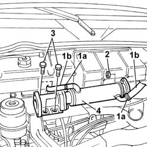
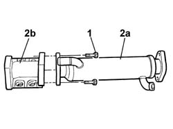

1080C80 EXHAUST GAS WATER HEAT EXCHANGER FOR EGR VALVE R R
- Path
- Procedures > 10 ENGINE UNIT > 1080 EXHAUST EMISSION CONTROL SYSTEM > 1080C EXHAUST GAS RECIRCULATION SYSTEM (E.G.R.) > 1080C80 EXHAUST GAS WATER HEAT EXCHANGER FOR EGR VALVE R R
- Kind
- repair procedure (removal / refitting; the operation number is the code)
- Applies to
- engines: 2.0 JTD 8V, 2.8 JTD 8V; all production periods
- Interactive page
- https://sloeber94.github.io/elrnDB-fDct/en/#/244000899
Applies to: engines: 2.0 JTD 8V; all production periods
Op. 1080C84 EGR VALVE AND HEAT EXCHANGER ASSEMBLY - DISMANTLING AND REASSEMBLING AT THE BENCH
Applies to: engines: 2.8 JTD 8V; all production periods
 Removing
Removing
 Refitting
RefittingOp. 1088D67 COOLANT PIPE BETWEEN COOLANT RESERVOIR AND THERMOSTAT - R.R.
See in Op. 1080C10
1. Open the retaining bands (1a) and release the pipes (1b).
2. Undo the fixing nuts.
3. Undo the fixing bolts.
4. Remove the heat exchanger assembly.

Applies to: engines: 2.8 JTD 8V; all production periods
- Place the heat exchanger on the bench.
1. Undo the fixing bolts.
2. Separate the exhaust gas/water heat exchanger for the EGR system (2a) from the exhaust gas supply pipe between the EGR valve and the intake manifold (2b).

Applies to: engines: 2.8 JTD 8V; all production periods
Refitting
Removing- At the bench.
- Join the heat exchanger with the pipe using the fixing bolts.
- Place the assembly in position on the engine intake.
- Tighten the nuts and the bolts and fit the pipes using the retaining bands.
See in Op. 1080C10
Op. 1088D67 COOLANT PIPE BETWEEN COOLANT RESERVOIR AND THERMOSTAT - R.R.